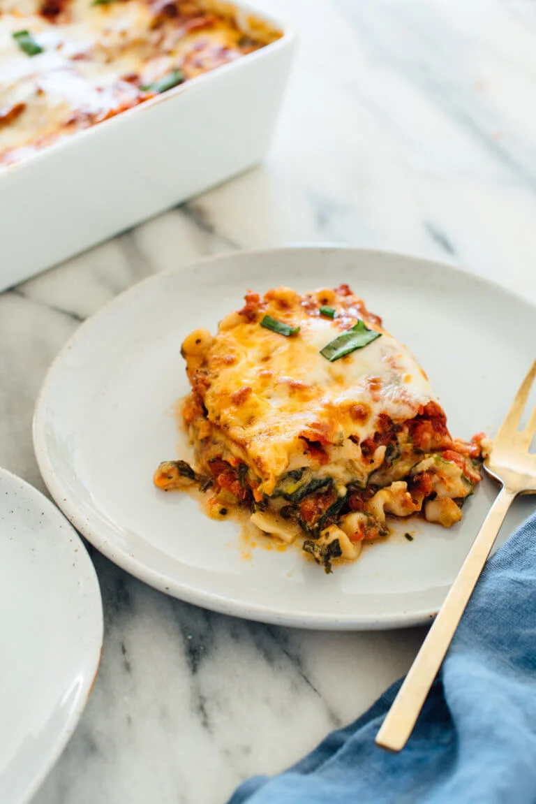
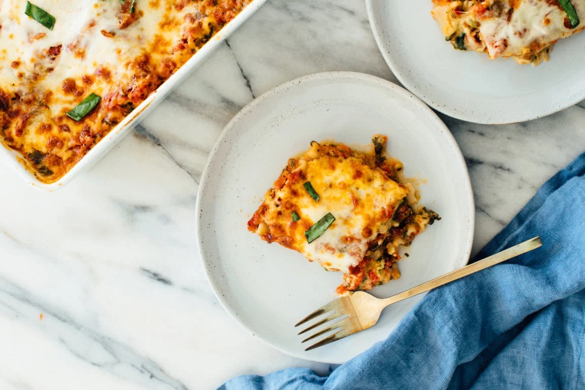

Vegetable Lasagna

Ingredients:
- 2 tablespoons extra-virgin olive oil
- 3 large carrots, chopped (about 1 cup)
- 1 red bell pepper, chopped
- 1 medium zucchini, chopped
- 1 medium zucchini, chopped
- 1 medium yellow onion, chopped
- ¼ teaspoon salt
- 5 to 6 ounces baby spinach
- 2 cups prepared marinara sauce
Instructions:
- Preheat the oven to 425 degrees Fahrenheit.
- To prepare the veggies: In a large skillet over medium heat, warm
the olive oil. Once shimmering, add the carrots, bell pepper,
zucchini, yellow onion, and salt. Cook, stirring every couple
of minutes, until the veggies are golden on the edges, about 8
to 12 minutes.
- Add a few large handfuls of spinach. Cook, stirring frequently,
until the spinach has wilted. Repeat with remaining spinach and
cook until all of the spinach has wilted, about 3 minutes. Remove
the skillet from the heat and set aside.
- Transfer the cooked veggies and spinach mixture to the bowl of the
food processor. Pulse until they are more finely chopped (but not
puréed!), about 5 to 7 times, stopping to scrape down the sides as
necessary. Transfer the mixture to the bowl of whipped cottage
cheese. Top with the remaining cottage cheese, then add ¼ to ½
teaspoon salt (to taste) and lots of freshly ground black
pepper. Stir to combine. Now it’s lasagna assembly time!
- Spread ½ cup tomato sauce evenly over the bottom of a 9” by 9”
baking dish. Layer 3 lasagna noodles on top (snap off their ends to
fit, and/or overlap their edges as necessary). Spread half of the
cottage cheese mixture evenly over the noodles. Top with ¾ cup
tomato sauce, then sprinkle ½ cup shredded cheese on top.
- Wrap a sheet of parchment paper or foil around the top of the
lasagna (don’t let it come into contact with the cheese). Bake,
covered, for 18 minutes, then remove the cover, rotate the pan by
180° and continue cooking for about 10 to 12 more minutes, until
the top is turning spotty brown.
